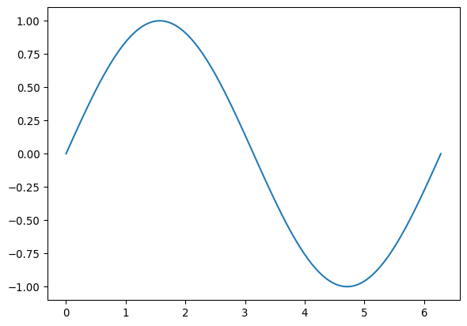
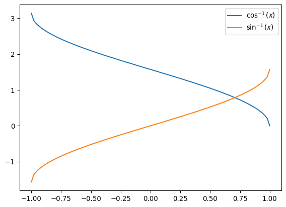

import numpy as npRepaso de numpy y otros
Arreglos
Los arreglos son mucho más rápidos para cálculos numéricos ya que son un bloque continuo en memoria. Son similares a los arreglos en lenguajes como C.
mi_arreglo = np.array([1,2,3])mi_arreglo[1] = 5mi_arregloarray([1, 5, 3])Los arreglos sólo pueden contener datos de un tipo de datos. Cuando se mezclan tipos, Python hará lo mejor que pueda para convertirlos a un úunico tipo.
np.array([1,'hola'])array(['1', 'hola'], dtype='<U21')Podemos hacer arreglos bidimensionales (matrices), tridimensionales, etc
np.array([[1,1],[1,1]])array([[1, 1],
[1, 1]])Los arreglos no pueden contener elementos de dimensiones diferentes
np.array([1,'hola',[2,'adios']])--------------------------------------------------------------------------- ValueError Traceback (most recent call last) Cell In[7], line 1 ----> 1 np.array([1,'hola',[2,'adios']]) ValueError: setting an array element with a sequence. The requested array has an inhomogeneous shape after 1 dimensions. The detected shape was (3,) + inhomogeneous part.
Llenar arreglos automáticamente
np.ones([3,4])array([[1., 1., 1., 1.],
[1., 1., 1., 1.],
[1., 1., 1., 1.]])np.zeros((2,3,4))array([[[0., 0., 0., 0.],
[0., 0., 0., 0.],
[0., 0., 0., 0.]],
[[0., 0., 0., 0.],
[0., 0., 0., 0.],
[0., 0., 0., 0.]]])np.full((3,2),3, dtype=np.float128)array([[3., 3.],
[3., 3.],
[3., 3.]], dtype=float128)np.arange(10,25,5)array([10, 15, 20])mi_arreglo2 = np.linspace(0,2,9)mi_arreglo2array([0. , 0.25, 0.5 , 0.75, 1. , 1.25, 1.5 , 1.75, 2. ])Inspeccionar arreglos
mi_arreglo2.ndim1np.full((3,2),3, dtype=np.float128).size6mi_arreglo2.data<memory at 0x78b51e241180>mi_arreglo2.shape(9,)mi_arreglo2.dtypedtype('float64')mi_arreglo2.nbytes72mi_arreglo2.astype(np.float16)array([0. , 0.25, 0.5 , 0.75, 1. , 1.25, 1.5 , 1.75, 2. ],
dtype=float16)mi_arreglo2.astype(np.float16).nbytes18Aritmética de arreglos
mi_arregloarray([1, 5, 3])mi_arreglo3 = mi_arreglo + 1mi_arreglo3array([2, 6, 4])mi_arreglo + mi_arreglo3array([ 3, 11, 7])mi_arreglo3/mi_arregloarray([2. , 1.2 , 1.33333333])mi_arreglo3 == mi_arregloarray([False, False, False])Se pueden usar los operadores +, -, *, /, %, **, ==, !=, >, <, >=, <=
mi_arreglo3.max()np.int64(6)mi_arreglo3.min()np.int64(2)Tajadas de arreglos
mi_arreglo_2d = np.array([[1,2,3],[4,5,6],[7,8,9]])mi_arreglo_2darray([[1, 2, 3],
[4, 5, 6],
[7, 8, 9]])mi_arreglo_2d[1:2]array([[4, 5, 6]])mi_arreglo_2d[1:]array([[4, 5, 6],
[7, 8, 9]])mi_arreglo_2d[1,1]np.int64(5)¿Cuál es la diferencia? El siguiente código primero toma todas las filas desde la segunda (índice 1), luego toma la segunda de esas listas.
mi_arreglo_2d[1:][1]array([7, 8, 9])Por otra parte, el siguiente código toma el primer elemento de cada una de esas listas.
mi_arreglo_2d[1:,1]array([5, 8])mi_arreglo_2d[1:,:-1]array([[4, 5],
[7, 8]])mi_arregloarray([1, 5, 3])mi_arreglo[mi_arreglo<=3]array([1, 3])menor_que_3 = mi_arreglo < 3menor_que_3array([ True, False, False])mi_arreglo[menor_que_3]array([1])Gráficos sencillos
Una parte importante del análisis de un problema en física consiste en su visalización. Para esto usamos la librería matplotlib
import matplotlib.pyplot as plt
import numpy as np# Preparamos los datos
x = np.linspace(0,2*np.pi,100)
y = np.sin(x)
# Graficamos los datos
plt.plot(x, y)
# Mostramos el gráfico
plt.show()
Para producir un gráfico basta seguir 6 pasos:
- Preparar los datos
- Crear el gráfico como objeto abstracto
- Graficar
- Modificar los parámetros visuales del gráfico
- Mostrar el gráfico
- Guardar el gráfico
Preparar los datos
Para graficar necesitamos una tabla de datos. Estos pueden ser de dos tipos:
- Resultados de la evaluación de una función (como en el ejemplo anterior).
- Datos de una simulación o una medición experimental.
# Preparamos los datos
x = np.linspace(-1,1,100)
y1 = np.arccos(x)
y2 = np.arcsin(x)# Producimos el gráfico
plt.plot(x, y1, label=r'$\cos^{-1}(x)$')
plt.plot(x, y2, label=r'$\sin^{-1}(x)$')
# Para diferenciar los dos gráficos podemos incluir una leyenda
plt.legend()
plt.show()
Normalmente los datos de un experimento o simulación están guardados en un archivo. Hablaremos de cómo manejar archivos más adelante. Por ahora ponemos a mano algunos datos (que son el resultado de una simulación de ciertas propiedades estadísticas de la distribución de materia a gran escala en el universo).
datos = np.array(
[[0.00314159, 3.0318397997408217, 0.4566634429053162],
[0.00628318, 2.7707221181056867, 0.17510327334847328],
[0.00942477, 2.6792094345075723, 0.14418474960362074],
[0.01256636, 2.8629530955402314, 0.0799879332308988],
[0.015707950000000002, 2.6228671669898738, 0.04669866360637852],
[0.01884954, 2.544881594794191, 0.032079885722964156],
[0.02199113, 2.457245781452802, 0.045660793878032256],
[0.02513272, 2.418177998205174, 0.041336657066345844],
[0.02827431, 2.358376185696977, 0.03448018004161942],
[0.031415900000000004, 2.346427014273152, 0.0331860259716874],
[0.03455749, 2.339197080901526, 0.02361983589273171],
[0.03769908, 2.2761885850394745, 0.026495927143311844],
[0.04084067, 2.2553242344026168, 0.021181457699213722],
[0.04398226, 2.218805385557498, 0.01764832127890884],
[0.04712385, 2.1968751769225405, 0.02084889785594682],
[0.05026544, 2.183116404353682, 0.0229514467313476],
[0.05340703, 2.149455000853029, 0.012785355627588396],
[0.05654862, 2.122002117746843, 0.017161461769528517],
[0.05969021, 2.0863880826499894, 0.013943154873837437]])Esto es el resultado de simular una cierta función \(f(q)\) donde \(q\) es la primera columna, \(f\) es la segunda columna y el error está en la tercera columna. Queremos solamente graficar f como función de q.
q = datos[:,0]
f = datos[:,1]plt.plot(q,f, label='$f(q)$')
plt.legend()
plt.show()Estas son las notas (normalizadas entre 0 y 100) de un conjunto de estudiantes de licenciatura en física de una universidad norteamericana. El primer número es la nota en un curso de mecánica clásica, la segunda la nota en un curso de mecánica cuántica y la tercera es la nota de un curso de experimentación avanzada.
notas = np.array(
[[100, 100, 93.0],
[53.0, 60.0, 37.0],
[42.0, 35.0, 89.0],
[57.0, 54.0, 37.0],
[77.0, 66.0, 53.0],
[23.0, 26.0, 55.0],
[97.0, 78.0, 68.0],
[65.0, 45.0, 69.0],
[74.0, 74.0, 84.0],
[39.0, 44.0, 78.0],
[95.0, 94.0, 25.0],
[95.0, 74.0, 60.0],
[77.0, 67.0, 17.0],
[52.0, 47.0, 49.0],
[66.0, 52.0, 27.0],
[74.0, 63.0, 47.0],
[79.0, 59.0, 13.0],
[60.0, 40.0, 92.0],
[80.0, 69.0, 36.0],
[74.0, 44.0, 82.0],
[100, 77.0, 7.0],
[30.0, 23.0, 14.0],
[96.0, 78.0, 57.0],
[60.0, 81.0, 2.0],
[57.0, 60.0, 29.0],
[72.0, 88.0, 25.0],
[44.0, 48.0, 58.0],
[57.0, 53.0, 89.0],
[58.0, 66.0, 31.0],
[54.0, 48.0, 27.0],
[58.0, 39.0, 86.0],
[62.0, 55.0, 67.0],
[54.0, 54.0, 66.0],
[74.0, 70.0, 89.0],
[60.0, 73.0, 39.0],
[58.0, 74.0, 81.0],
[50.0, 67.0, 52.0],
[55.0, 50.0, 60.0],
[91.0, 89.0, 70.0],
[50.0, 55.0, 100],
[47.0, 83.0, 51.0],
[100, 100, 32.0],
[53.0, 59.0, 72.0],
[7.0, 39.0, 95.0],
[73.0, 68.0, 76.0],
[92.0, 100.0, 83.0],
[81.0, 82.0, 66.0],
[99.0, 88.0, 80.0],
[79.0, 98.0, 48.0],
[71.0, 45.0, 53.0]])Crear el gráfico
Los ejemplos de arriba usan una versión simplificada (y mucho más limpia). Vamos a hacer unos ejemplos que usan toda la maquinaria de matplotlib, pero siempre es mejor usar la solución más sencilla.
# Primero creamos una figura, es un objeto abstracto que puede contener varios gráficos
fig = plt.figure()
# Ahora creamos unos "ejes", que son la región donde el gráfico aparecerá
ax1 = fig.add_subplot(2,2,1) # número de filas, número de columnas, posición de este eje
ax2 = fig.add_subplot(2,2,2)
ax3 = fig.add_subplot(2,2,3)Graficar
fig = plt.figure()
axs1 = fig.add_subplot(2,2,1)
axs2 = fig.add_subplot(2,2,2)
axs3 = fig.add_subplot(2,2,3)
axs1.scatter(notas[:,0], notas[:,1])
axs2.scatter(notas[:,0], notas[:,2])
axs3.scatter(notas[:,1], notas[:,2])
fig.show()/tmp/ipykernel_155057/941235242.py:11: UserWarning: FigureCanvasAgg is non-interactive, and thus cannot be shown
fig.show()
# Preparamos los datos
x = np.linspace(0,2*np.pi,100)
y = np.sin(x)
# Graficamos los datos
plt.fill(x, y)
# Mostramos el gráfico
plt.show()Parámetros del gráfico
Podemos cambiar diferentes parámetros como el color, el tipo de línea o punto, etc.
fig = plt.figure()
axs1 = fig.add_subplot(2,2,1)
axs2 = fig.add_subplot(2,2,2)
axs3 = fig.add_subplot(2,2,3)
axs1.scatter(notas[:,0], notas[:,1], color='yellowgreen', marker='^')
axs2.scatter(notas[:,0], notas[:,2], color='teal', marker='o')
axs3.scatter(notas[:,1], notas[:,2], color='darkslategray', marker='+')
fig.suptitle('Correlación entre notas')
axs1.set_title('Cuántica-Clásica')
axs2.set_title('Cuántica-Experimental')
axs3.set_title('Clásica-Experimental')
fig.tight_layout(pad=2.0)
fig.show()/tmp/ipykernel_155057/1727335637.py:17: UserWarning: FigureCanvasAgg is non-interactive, and thus cannot be shown
fig.show()
# Preparamos los datos
x = np.linspace(-1,1,100)
y1 = np.arccos(x)
y2 = np.arcsin(x)
y3 = np.arctan(x)
plt.plot(x, y1, label=r'$\cos^{-1}(x)$', linestyle='--', color='turquoise', linewidth=2)
plt.plot(x, y2, label=r'$\sin^{-1}(x)$', linestyle='-', color='tan', linewidth=2)
plt.plot(x, y3, label=r'$\tan^{-1}(x)$', linestyle=':', color='cornflowerblue', linewidth=2.5)
plt.xlabel('$x$')
plt.ylabel('Función')
# Para diferenciar los dos gráficos podemos incluir una leyenda
plt.legend()
plt.show()Guardar el gráfico
q = datos[:,0]
f = datos[:,1]
e = datos[:,2]
plt.errorbar(q,f,e, ecolor='black', capsize=3)
plt.xlabel('$q$')
plt.ylabel('$f(q)$')
## Importante! Poner antes de plt.show()
#plt.savefig('datos.pdf')
plt.show()Archivos de texto
Cuando hacemos un cálculo queremos guardar el resultado. Una manera de hacerlo es con archivos de texto.
import osos.chdir('/home/jorge/Dropbox/Academic_2024/')os.listdir()['numerical_gr',
'anomaly_detection_personal',
'anomaly_detection',
'Comprobante-TEF_IPE2401182056113030321850.pdf',
'Asymptotic inflation',
'Blood',
'Seminars',
'Burocraticos',
'long_wave_gw',
'quick_calculations.ipynb',
'tda',
'Teaching']os.getcwd()'/home/jorge/Dropbox/Academic_2024'os.chdir('/home/jorge/Dropbox/Academic_2024/Teaching/NM/Apuntes')file = open('ejemplo.py', 'r')for line in file.readlines():
print(line, end='')"""
Created on Sat Aug 15 14:56:57 2020
@author: jorgenorena
"""
def ejemplo1():
print('Una función')
def ejemplo2():
print('Otra cosa')
return 1file.close()with open('ejemplo.py', 'r') as file:
lineas = [line for line in file]
with open('copia.py', 'w') as file:
for l in lineas:
file.write(l)with open('copia.py', 'r') as file:
for l in file:
print(l, end='')"""
Created on Sat Aug 15 14:56:57 2020
@author: jorgenorena
"""
def ejemplo1():
print('Una función')
def ejemplo2():
print('Otra cosa')
return 1Formato para archivos de texto
Normalmente queremos guardar números bien formateados.
import numpy as npx = np.linspace(0,1,20)
y = x**2with open('copia.txt', 'w') as file:
for i in range(len(x)):
texto = f'{x[i]:020.3f}\t{y[i]:.3e}\n'
file.write(texto)with open('copia.txt', 'r') as file:
x = []
y = []
for l in file:
xin, yin = l.split()
x.append(float(xin))
y.append(float(yin))
print(l, end='')0000000000000000.000 0.000e+00
0000000000000000.053 2.770e-03
0000000000000000.105 1.108e-02
0000000000000000.158 2.493e-02
0000000000000000.211 4.432e-02
0000000000000000.263 6.925e-02
0000000000000000.316 9.972e-02
0000000000000000.368 1.357e-01
0000000000000000.421 1.773e-01
0000000000000000.474 2.244e-01
0000000000000000.526 2.770e-01
0000000000000000.579 3.352e-01
0000000000000000.632 3.989e-01
0000000000000000.684 4.681e-01
0000000000000000.737 5.429e-01
0000000000000000.789 6.233e-01
0000000000000000.842 7.091e-01
0000000000000000.895 8.006e-01
0000000000000000.947 8.975e-01
0000000000000001.000 1.000e+00y[0.0,
0.00277,
0.01108,
0.02493,
0.04432,
0.06925,
0.09972,
0.1357,
0.1773,
0.2244,
0.277,
0.3352,
0.3989,
0.4681,
0.5429,
0.6233,
0.7091,
0.8006,
0.8975,
1.0]HDF5
Tomado de: https://www.geeksforgeeks.org/hdf5-files-in-python/
Una manera más eficiente de guardar grandes cantidades de datos es con archivos binarios. Pero el formato de los archivos queda a discreción del programador. Por eso ha surgido un formato más estándar llamadoo HDF5.
# Primero importamos el módulo
import h5py
# Estos son los datos
x = np.linspace(0,10,30)
y = x**2
# Ahora los grabamos a un archivo
with h5py.File('prueba.hd5', 'w') as file:
datos1 = file.create_dataset('datos1', data=x)
datos2 = file.create_dataset('datos2', data=y)with h5py.File('prueba.hd5', 'r') as file:
d1 = file['datos1']
d2 = file['datos2']
print(min(d1))
print(max(d1[:5]))0.0
1.3793103448275863La ventaja de esto es que en realidad las variables d1 y d2 no son arreglos. Son “punteros” a los datos que se encuentran en el disco duro en vez de estar en la RAM. Esto ahorra espacio en RAM.
with h5py.File('prueba.hd5', 'r') as file:
d1 = file['datos1']
d2 = file['datos2']
d3 = d2[d1[:] > 1]
print(d3)[ 1.07015458 1.90249703 2.97265161 4.28061831 5.82639715
7.60998811 9.6313912 11.89060642 14.38763377 17.12247325
20.09512485 23.30558859 26.75386445 30.43995244 34.36385256
38.5255648 42.92508918 47.56242568 52.43757432 57.55053508
62.90130797 68.48989298 74.31629013 80.38049941 86.68252081
93.22235434 100. ]¡Tareas!
Tarea 1.6
Un colega le entrega a usted archivos de texto con los resultados de una simulación (simulacion.txt). Este archivo contiene tres columnas separadas por espacios tal que cada fila es un dato y las tres columnas son tres propiedades simuladas de ese dato.
Escriba una función que lea ese archivo de texto y lo vuelva a guardar en un archivo simulacion.hd5 con tres datasets correspondientes a las tres propiedades de cada dato.
Como usted quiere reutilizar esta función para cualquier otro archivo con tres columnas, la función debe tomar el nombre del archivo de texto y el nombre deseado para el nuevo archivo hd5 como argumentos.
El archivo simulacion.txt contiene por ejemplo lo siguiente:
3.141590000000000094e-03 2.557680595776000416e+02 4.501400409434224770e+01
6.283180000000000189e-03 3.752818426478838205e+02 2.947770471609068110e+01
9.424770000000000716e-03 4.246697882492646841e+02 2.843524433400840579e+01
1.256636000000000038e-02 4.676325636948347437e+02 2.576223788106328882e+01
1.570795000000000177e-02 4.820912691815412359e+02 1.530261598082400276e+01
1.884954000000000143e-02 4.337667969674867550e+02 1.450243036000263963e+01
2.199113000000000109e-02 4.299064323187142804e+02 7.689521175184014012e+00
2.513272000000000075e-02 3.840742743415148084e+02 5.880658615460115257e+00
2.827431000000000041e-02 3.464876766126099596e+02 5.062040746246734280e+00 Tarea 1.7
Sin usar ciclos for ni while, escriba un código que calcule la siguiente sumatoria
\[ \sum_{n = 1}^{100} e^n(n+1) \]
Tarea 1.8
Grafique en una misma figura la siguiente función junto con su serie de Taylor alrededor de \(x = 0\) truncada al término número 10. ¿Hasta cuál valor de \(x\) parece ser una buena aproximación?
\[ f(x) = x\sin(x) \]
Use colores y estilos de línea diferentes para cada línea. Escoja un rango de valores de \(x\) que represente lo que quiera concluir sobre esta aproximación. Incluya una leyenda para facilitar la lectura del gráfico.
Tarea 1.9
Suponga que usted es un ayudante de un laboratorio de física. En un experimento se pide medir la posición de una masa que cae en un plano inclinado a intervalos regulares en el tiempo. El equipo disponible puede medir las posiciones con una precisión de \(4\,\text{mm}\). Uno de los estudiantes usa los siguientes datos (en \(\text{cm}\)):
datos = [0.9, 2. , 3.6, 5.6, 8. , 10.9, 14.2, 18.]Grafique estos datos con sus barras de error. Explique por qué el estudiante merece una nota de 1.0. Compare con los siguientes datos obtenidos por un estudiante que merece 7.0.
datos_7 = [0.3, 1.7, 4.1, 5.7, 8.5, 10.7, 13.6, 17.2]Tarea 1.10
Un colega le pasa a usted un archivo .hd5 que contiene tres “datasets” ‘x’, ‘y’, ‘e’. Todos los datasets tienen la misma longitud y el i-ésimo elemento de cada dataset corresponde a una propiedad diferente del i-ésimo dato.
Escriba una función que grafique esos resultados donde ‘x’ es el eje horizontal, ‘y’ el eje vertical y ‘e’ son las barras de error de ‘y’.